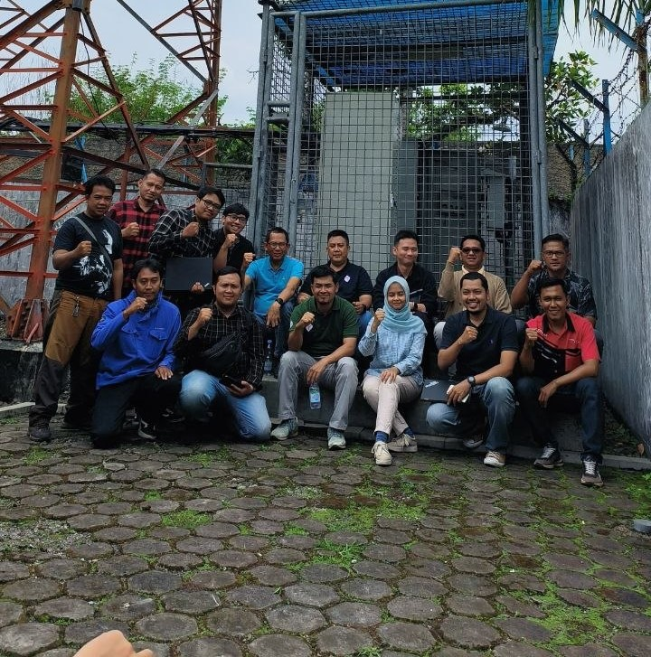
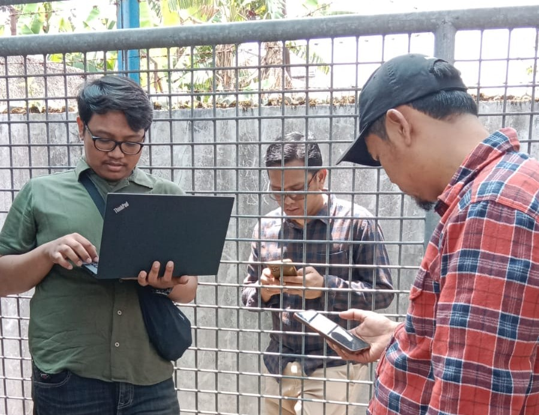
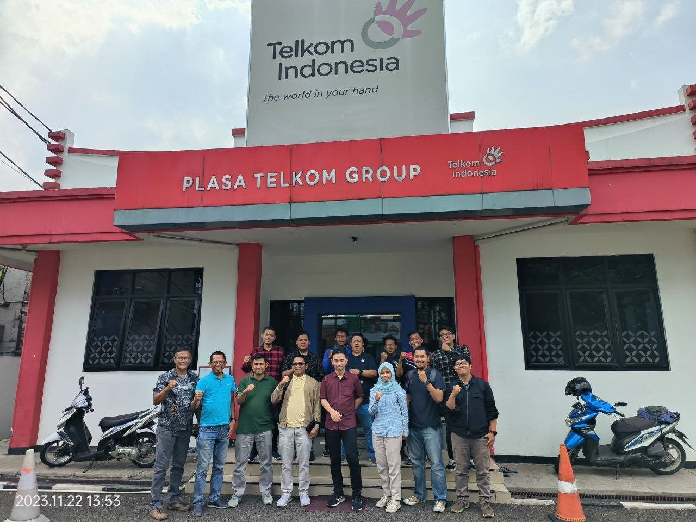
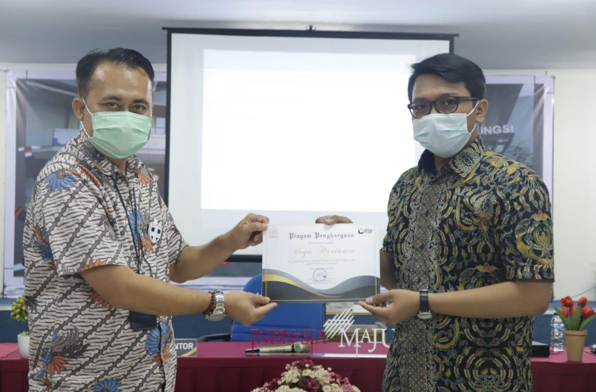
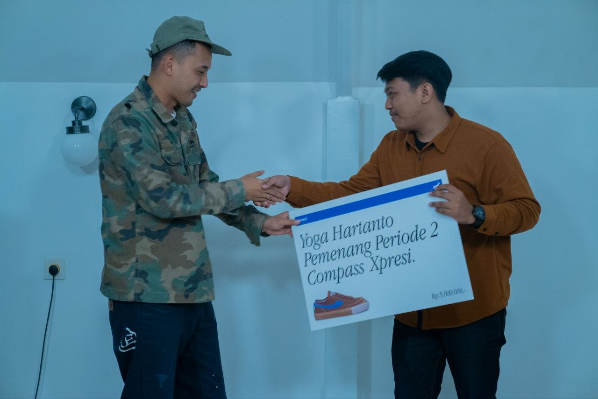
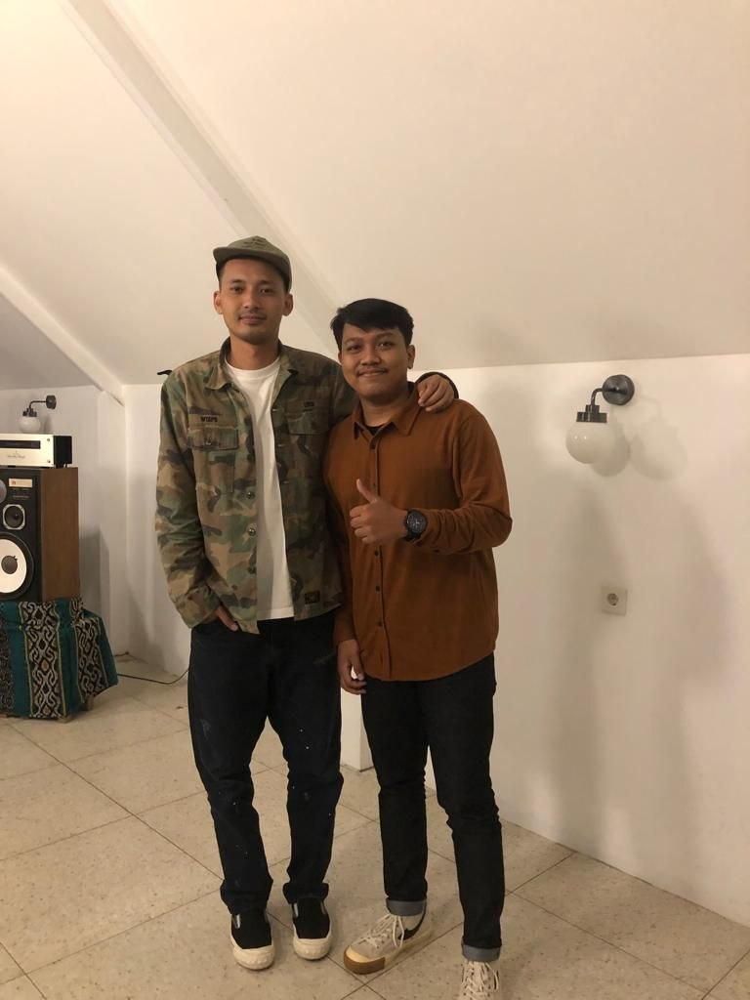
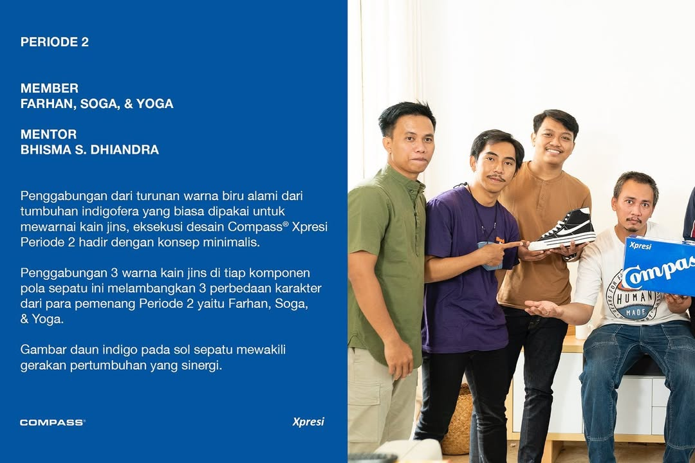

Core Competencies & Skills
Featured Automation Project
Memiliki pengalaman pengembangan otomatisasi kertas kerja Microsoft excel untuk menghilangkan proses input rumus manual yang repetitif dipekerjaan yang berulang dan memiliki load data yang besar, melalui standarisasi template dan script macro excel terintegrasi.
| Indikator Kerja | Metode Manual (Lama) | Solusi VBA Macro Excel (Baru) |
|---|---|---|
| Proses Input Rumus | Manual, satu per satu, & berulang | Otomatis via script macro excel |
| Durasi Pengerjaan lebih efisien | 1 - 2 Jam (60 - 120 Menit) | Hanya 10 Menit! (Efisiensi 91%) |
| Keamanan Data | Rentan rumus terhapus / salah ketik | Akurasi Mutlak (Formula Terkunci di Sistem) |


Pengalaman Profesional
- Bertanggung jawab melakukan monitoring dan controlling proses kapitalisasi aset perusahaan agar sesuai dengan standar PSAK.
- Melakukan rekonsiliasi berkala pada Buku Besar (General Ledger) dan Penerimaan Barang (Goods Receipt) aset guna meminimalkan risiko selisih data.
- Mengevaluasi nilai wajar Aset Dalam Konstruksi (AUC) serta menyiapkan laporan pemantauan aset harian dan bulanan.
- Melakukan pelaksanaan audit lapangan (cek fisik) bersama auditor eksternal (EY) untuk mengecek secara fisik kesesuaian aset infrastruktur BTS di wilayah Bandung (Kopo & Ciwidey).



- Memegang kendali penuh atas manajemen operasional toko dari proses pemantauan stok di marketplace hingga pengelolaan gudang.
- Menangani pembuatan dokumen Pesanan Pembelian (Purchase Order) ke pemasok serta memastikan ketepatan penanganan Pajak Pertambahan Nilai (PPN).
- Mengelola pembukuan arus kas bisnis secara mandiri meliputi rekonsiliasi harian, penyusunan laporan keuangan, hingga pelaporan pajak tahunan (PP23) melalui e-Filing DJP.
- Mengatur strategi periklanan digital serta efisiensi anggaran iklan di platform Shopee, TikTok, dan Lazada.
Dokumentasi & Pengalaman Tax Volunteer
Membantu pelayanan pelaporan SPT Tahunan PPh Badan, UMKM, dan Orang Pribadi menggunakan E-Filing dan E-Form selama periode aktif relawan pajak.

Achievements & Personal Projects
Terpilih sebagai pemenang dalam program kampanye kolaborasi nasional antara institusi perbankan BCA (Xpresi) dan brand lokal legendaris Sepatu Compass. Penghargaan dan penyerahan produk eksklusif diserahkan langsung oleh Aji Handoko Purbo selaku Creative Director Sepatu Compass.


